BERT：面向语言理解的深度双向变换器预训练
论文发布日期
作者： Jacob Devlin、Ming-Wei Chang、Kenton Lee、Kristina Toutanova 机构： Google AI Language 版本： arXiv:1810.04805v2，2019 年 5 月 24 日
摘要
我们提出一种新的语言表示模型 BERT，即“来自变换器的双向编码器表示”。不同于近期的语言表示模型，BERT 通过在所有层中联合依据左、右两侧上下文，对无标注文本预训练深层双向表示。因此，只需增加一个输出层，就可以对预训练的 BERT 模型进行微调，在问答、语言推理等广泛任务上建立达到当前最佳水平的模型，而无需大幅修改任务专用架构。BERT 在概念上简单、在经验上强大。在十一项自然语言处理任务上取得新的最佳结果，包括将 GLUE 得分提升到 80.5%（绝对提升 7.7 个百分点）、将 MultiNLI 准确率提升到 86.7%（绝对提升 4.6 个百分点）、将 SQuAD 1.1 问答测试集 F1 提升到 93.2（提升 1.5 个百分点），以及将 SQuAD 2.0 测试集 F1 提升到 83.1（提升 5.1 个百分点）。
1. 引言
已有研究表明，语言模型预训练能够有效改进许多自然语言处理任务（Collobert 与 Weston，2008；McCann 等，2017；Peters 等，2018a；Radford 等，2018）。这些任务包括句子级任务，例如自然语言推理（Bowman 等，2015；Williams 等，2018）和释义识别（Dolan 与 Brockett，2005），它们通过整体分析句子来预测句子之间的关系；也包括词元级任务，例如命名实体识别和问答（Tjong Kim Sang 与 De Meulder，2003；Rajpurkar 等，2016），它们要求模型在词元级别生成细粒度输出。
将预训练语言表示用于下游任务，现有两种策略：基于特征的方法和微调方法。ELMo 等基于特征的方法（Peters 等，2018a）使用包含预训练表示作为附加特征的任务专用架构。生成式预训练变换器（OpenAI GPT）等微调方法（Radford 等，2018）引入极少任务专用参数，然后简单地微调整个预训练参数来训练下游任务。这两种方法在预训练阶段使用相同的目标函数，即使用单向语言模型学习通用语言表示。
我们认为，当前技术限制了预训练表示的能力，尤其是微调方法。主要限制在于，标准语言模型是单向的，这限制了预训练时可以使用的架构。例如，OpenAI GPT 使用从左到右的架构，在变换器的自注意力层中，每个词元只能关注左侧词元（Vaswani 等，2017）。对于句子级任务，这种限制并不理想；而在问答等词元级任务中，微调时必须同时纳入两个方向的上下文，这种限制可能造成严重影响。
在本文中，我们通过提出 BERT（来自变换器的双向编码器表示）来改进基于微调的方法。BERT 使用受完形填空任务启发的“掩码语言模型”（MLM）预训练目标（Taylor，1953），消除了前述单向约束。掩码语言模型会随机遮盖输入中的一部分词元，目标是仅根据上下文预测被遮盖词元原本的词表编号。不同于从左到右的语言模型预训练，MLM 目标允许表示融合左、右上下文，从而预训练深层双向变换器。此外，我们还使用“下一句预测”任务，联合预训练文本对表示。本文贡献如下：
- 我们证明了双向预训练对语言表示的重要性。不同于使用单向语言模型预训练的 Radford 等人（2018），BERT 使用掩码语言模型来获得预训练的深层双向表示。这也不同于 Peters 等人（2018a）：后者使用分别训练的左到右和右到左语言模型，并将其浅层拼接。
- 我们证明预训练表示减少了大量精心设计的任务专用架构的需要。BERT 是第一个基于微调的表示模型，在大规模句子级和词元级任务集合上达到当前最佳水平，并超过许多任务专用架构。
- BERT 推动了十一项自然语言处理任务的最佳结果。代码与预训练模型见 https://github.com/google-research/bert。
2. 相关工作
通用语言表示预训练有着悠久历史，本节简要回顾最广泛使用的方法。
2.1 无监督的基于特征方法
学习具有广泛适用性的词表示，几十年来一直是研究重点，包括非神经方法（Brown 等，1992；Ando 与 Zhang，2005；Blitzer 等，2006）和神经方法（Mikolov 等，2013；Pennington 等，2014）。预训练词嵌入是现代自然语言处理系统的重要组成部分，相比从零开始学习的嵌入，它们能带来显著改进（Turian 等，2010）。为了预训练词嵌入向量，人们使用过从左到右的语言建模目标（Mnih 与 Hinton，2009），也使用过在左右上下文中区分正确词与错误词的目标（Mikolov 等，2013）。
这些方法后来被推广到更粗粒度的句子嵌入（Kiros 等，2015；Logeswaran 与 Lee，2018）和段落嵌入（Le 与 Mikolov，2014）。为了训练句子表示，已有工作使用了对候选下一句排序的目标（Jernite 等，2017；Logeswaran 与 Lee，2018）、根据前一句表示从左到右生成下一句词元的目标（Kiros 等，2015），或由去噪自动编码器推导的目标（Hill 等，2016）。
ELMo 及其前身（Peters 等，2017；2018a）从另一个维度推广了传统词嵌入研究。它们从一个从左到右和一个从右到左的语言模型中提取上下文相关特征。每个词元的上下文表示是左到右表示与右到左表示的拼接。在把上下文词嵌入与已有任务专用架构结合时，ELMo 推动了多个主要自然语言处理基准的最佳水平，包括问答（Rajpurkar 等，2016）、情感分析（Socher 等，2013）和命名实体识别（Tjong Kim Sang 与 De Meulder，2003）。Melamud 等人（2016）提出使用双向长短期记忆网络，通过同时依据左右上下文预测一个词来学习上下文表示。与 ELMo 类似，该模型是基于特征的，并非深层双向模型。Fedus 等人（2018）表明，完形填空任务能够提升文本生成模型的鲁棒性。
2.2 无监督微调方法
与基于特征的方法一样，早期工作只从无标注文本预训练词嵌入参数（Collobert 与 Weston，2008）。
近期工作从无标注文本预训练生成上下文词元表示的句子或文档编码器，再针对监督下游任务进行微调（Dai 与 Le，2015；Howard 与 Ruder，2018；Radford 等，2018）。这些方法的优点是只需从零开始学习少量参数。部分由于这一优势，OpenAI GPT（Radford 等，2018）在 GLUE 基准（Wang 等，2018a）的许多句子级任务上取得了当时最佳结果。预训练时使用了从左到右的语言建模和自动编码目标（Howard 与 Ruder，2018；Radford 等，2018；Dai 与 Le，2015）。
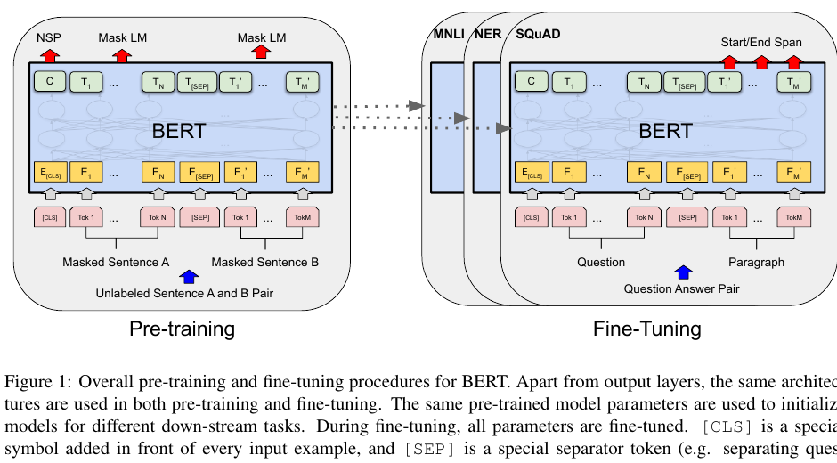
图 1： BERT 的总体预训练与微调流程。除了输出层之外，预训练和微调使用相同架构。相同的预训练模型参数用于初始化不同下游任务的模型。微调时，所有参数都会被微调。[CLS] 是加在每个输入样例前的特殊符号，[SEP] 是特殊分隔词元（例如用于分隔问题与答案）。
2.3 从监督数据进行迁移学习
已有研究证明，从拥有大规模数据集的监督任务迁移也很有效，例如自然语言推理（Conneau 等，2017）和机器翻译（McCann 等，2017）。计算机视觉研究同样展示了从大规模预训练模型进行迁移学习的重要性；一种有效做法是微调在 ImageNet（Deng 等，2009）上预训练的模型（Yosinski 等，2014）。
3. BERT
本节介绍 BERT 及其详细实现。我们的框架包含两个步骤：预训练和微调。预训练期间，模型在无标注数据上针对不同预训练任务进行训练。微调时，首先使用预训练参数初始化 BERT 模型，然后使用下游任务的有标注数据微调全部参数。每个下游任务都有独立的微调模型，尽管它们使用相同的预训练参数初始化。图 1 的问答示例将作为本节贯穿示例。
BERT 的一个显著特点是跨不同任务的统一架构。预训练架构与最终下游架构之间的差异非常小。
模型架构
BERT 的模型架构是基于原始实现（Vaswani 等，2017）的多层双向变换器编码器，该实现已在 tensor2tensor 库中发布。由于变换器已经很常见，且我们的实现几乎与原始实现相同，本文省略对模型架构的穷尽式背景描述，读者可参考 Vaswani 等人（2017）以及《带注释的变换器》等优秀指南。
本文用 $L$ 表示层数（即变换器块数量），用 $H$ 表示隐藏层大小，用 $A$ 表示自注意力头数量。我们主要报告两种模型规模：
- BERTBASE：$L=12$、$H=768$、$A=12$，参数总量 1.1 亿；
- BERTLARGE：$L=24$、$H=1024$、$A=16$，参数总量 3.4 亿。
BERTBASE 被设计为与 OpenAI GPT 具有相同模型规模，便于比较。然而，BERT 变换器使用双向自注意力，而 GPT 变换器使用受限自注意力，每个词元只能关注左侧上下文。
输入与输出表示
为了让 BERT 处理各种下游任务，我们的输入表示能够在一个词元序列中无歧义地表示单个句子和句子对（例如“问题，答案”）。在全文中，“句子”可以是连续文本的任意片段，而不一定是语言学意义上的句子。“序列”指输入 BERT 的词元序列，它可以是单个句子，也可以是打包在一起的两个句子。
我们使用 WordPiece 嵌入（Wu 等，2016），词表包含 30,000 个词元。每个序列的第一个词元总是特殊分类词元 [CLS]。对应这个词元的最终隐藏状态被用作分类任务的聚合序列表示。句子对被打包成一个序列。我们通过两种方式区分句子：第一，用特殊词元 [SEP] 分隔它们；第二，为每个词元加入一个可学习嵌入，指示它属于句子 A 还是句子 B。如图 1 所示，我们将输入嵌入记为 $E$，特殊 [CLS] 词元的最终隐藏向量记为 $C\in\mathbb{R}^{H}$，第 $i$ 个输入词元的最终隐藏向量记为 $T_i\in\mathbb{R}^{H}$。
对于给定词元，其输入表示由对应的词元嵌入、分段嵌入和位置嵌入相加得到。图 2 对这种构造进行了可视化。
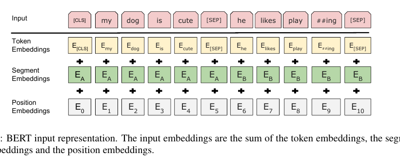
图 2： BERT 输入表示。输入嵌入是词元嵌入、分段嵌入和位置嵌入的总和。
3.1 预训练 BERT
不同于 Peters 等人（2018a）和 Radford 等人（2018），我们不使用传统的从左到右或从右到左语言模型预训练 BERT。相反，我们使用本节介绍的两个无监督任务预训练 BERT。这一步在图 1 的左侧展示。
任务 1：掩码语言模型
直观地说，深层双向模型应当严格强于从左到右模型，或浅层拼接的左到右与右到左模型。不幸的是，标准条件语言模型只能从左到右或从右到左训练，因为双向条件会让每个词间接“看到自己”，模型可以在多层上下文中直接预测目标词。
为了训练深层双向表示，我们简单地随机遮盖一定比例的输入词元，然后预测这些被遮盖的词元。我们将该过程称为“掩码语言模型”（MLM），文献中也常称为完形填空任务（Taylor，1953）。此时，与被遮盖词元对应的最终隐藏向量会被送入一个覆盖整个词表的输出 softmax，就像标准语言模型一样。在所有实验中，我们随机遮盖每个序列中 15% 的 WordPiece 词元。不同于去噪自动编码器（Vincent 等，2008），我们只预测被遮盖的词，而不是重建整个输入。
虽然这种方法让我们能够获得双向预训练模型，但它带来的缺点是预训练与微调之间存在不匹配，因为 [MASK] 词元不会在微调时出现。为缓解这一问题，我们不总是把“被遮盖”词替换为真正的 [MASK] 词元。训练数据生成器会随机选择 15% 的词元位置用于预测。如果选择了第 $i$ 个词元，则以以下方式替换第 $i$ 个词元：(1) 80% 的概率替换为 [MASK]；(2) 10% 的概率替换为随机词元；(3) 10% 的概率保持第 $i$ 个词元不变。随后用 $T_i$ 预测原始词元，并计算交叉熵损失。附录 C.2 比较了这一过程的不同变体。
任务 2：下一句预测
许多重要的下游任务，例如问答和自然语言推理，都依赖于理解两个句子之间的关系，而语言建模无法直接捕捉这种关系。为了训练理解句子关系的模型，我们预训练一个二元化的下一句预测任务；该任务可以从任意单语语料中简单生成。具体而言，为每个预训练样例选择句子 A 和 B 时，50% 的情况下 B 是实际跟随 A 的下一句（标记为 IsNext），另外 50% 的情况下 B 是语料中的随机句子（标记为 NotNext）。如图 1 所示，使用 $C$ 进行下一句预测。尽管任务很简单，第 5.1 节表明，针对该任务进行预训练对问答和自然语言推理都非常有益。最终模型在下一句预测任务上达到 97%--98% 的准确率。
下一句预测任务与 Jernite 等人（2017）、Logeswaran 和 Lee（2018）使用的表示学习目标密切相关。然而，先前工作只把句子嵌入迁移到下游任务，而 BERT 把所有参数都用于初始化最终任务模型参数。未经过微调时，向量 $C$ 不是有意义的句子表示，因为它是通过下一句预测训练得到的。
预训练数据
预训练过程大体遵循语言模型预训练领域的已有做法。预训练语料使用 BooksCorpus（8 亿词）（Zhu 等，2015）和英文维基百科（25 亿词）。对于维基百科，我们只提取文本段落，忽略列表、表格和标题。关键在于使用文档级语料，而不是像 Billion Word Benchmark（Chelba 等，2013）那样打乱句子的语料，这样才能提取长的连续序列。
3.2 BERT 微调
由于变换器中的自注意力机制允许 BERT 对许多下游任务建模，无论任务涉及单个文本还是文本对，只需替换合适的输入和输出，微调过程就很直接。对于涉及文本对的应用，一种常见模式是在应用双向交叉注意力之前独立编码文本对（Parikh 等，2016；Seo 等，2017）。BERT 则用自注意力机制统一这两个阶段：用自注意力编码拼接后的文本对，实际上包含了两个句子之间的双向交叉注意力。
对于每个任务，我们把任务专用输入与输出接入 BERT，并端到端微调全部参数。在输入端，预训练中的句子 A 与句子 B 分别对应：(1) 释义识别中的句子对；(2) 蕴含任务中的假设--前提对；(3) 问答中的问题--段落对；(4) 文本分类或序列标注中的退化文本--空对。在输出端，词元表示被送入词元级任务的输出层，例如序列标注或问答；[CLS] 表示被送入分类输出层，例如蕴含或情感分析。
相比预训练，微调成本相对较低。从完全相同的预训练模型开始，本文所有结果都可以在单个云 TPU 上至多 1 小时内复现，或在 GPU 上用数小时复现。第 4 节相应小节介绍任务专用细节，附录 A.5 提供更多详情。
4. 实验
本节给出 BERT 在 11 项自然语言处理任务上的微调结果。
4.1 GLUE
通用语言理解评估（GLUE）基准（Wang 等，2018a）是一组多样化的自然语言理解任务。附录 B.1 详细描述了 GLUE 数据集。
在 GLUE 上微调时，我们按照第 3 节所述表示输入序列（单句或句子对），并使用对应于第一个输入词元 [CLS] 的最终隐藏向量 $C\in\mathbb{R}^{H}$ 作为聚合表示。微调期间引入的唯一新参数是分类层权重 $W\in\mathbb{R}^{K\times H}$，其中 $K$ 是标签数量。我们使用 $C$ 和 $W$ 计算标准分类损失，即 $\log(\operatorname{softmax}(CW^T))$。
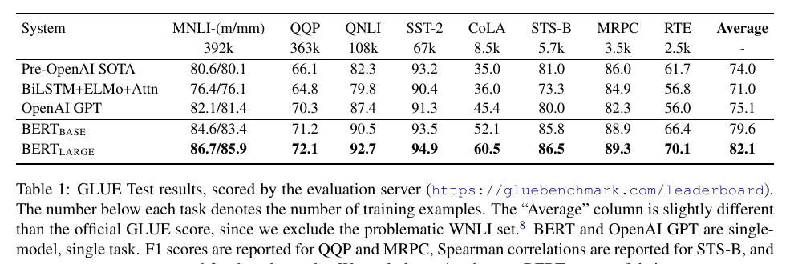
表 1： GLUE 测试集结果，由评测服务器评分（https://gluebenchmark.com/leaderboard）。每个任务下方的数字表示训练样例数量。“平均值”列与官方 GLUE 得分略有不同，因为我们排除了有问题的 WNLI 数据集。BERT 与 OpenAI GPT 都是单模型、单任务结果。QQP 和 MRPC 报告 F1，STS-B 报告 Spearman 相关系数，其他任务报告准确率。排除了使用 BERT 作为组件的系统。
所有 GLUE 任务都使用批大小 32，在数据上微调 3 个训练周期。对于每个任务，我们在开发集上从 $5\mathrm{e}{-5}$、$4\mathrm{e}{-5}$、$3\mathrm{e}{-5}$ 和 $2\mathrm{e}{-5}$ 中选取最佳微调学习率。此外，我们发现 BERTLARGE 在小数据集上有时微调不稳定，因此运行多次随机重启，并选择开发集上表现最佳的模型。随机重启时使用同一个预训练检查点，但改变微调数据的打乱方式和分类器层初始化。
结果见表 1。BERTBASE 和 BERTLARGE 在所有任务上都以明显优势超过所有系统，相比此前最佳水平，平均准确率分别提升 4.5% 和 7.0%。注意，除注意力掩码外，BERTBASE 与 OpenAI GPT 的模型架构几乎相同。在规模最大且报道最多的 GLUE 任务 MNLI 上，BERT 将绝对准确率提升了 4.6%。在官方 GLUE 排行榜上，BERTLARGE 得分为 80.5，而撰写本文时 OpenAI GPT 得分为 72.8。
我们发现 BERTLARGE 在所有任务上都显著超过 BERTBASE，尤其是在训练数据很少的任务上。模型规模的影响将在第 5.2 节中进一步研究。
4.2 SQuAD 1.1
斯坦福问答数据集（SQuAD 1.1）包含 10 万个由众包收集的问题--答案对（Rajpurkar 等，2016）。给定一个问题和维基百科中包含答案的段落，任务是预测段落中的答案文本跨度。
如图 1 所示，在问答任务中，我们把输入问题和段落表示为一个打包序列，问题使用 A 嵌入，段落使用 B 嵌入。微调时只引入开始向量 $S\in\mathbb{R}^{H}$ 和结束向量 $E\in\mathbb{R}^{H}$。词元 $i$ 作为答案跨度起点的概率，是 $T_i$ 与 $S$ 的点积经过对段落中所有词元的 softmax：
答案跨度终点使用对应公式。位置 $i$ 到位置 $j$ 的候选跨度得分定义为 $S\cdot T_i+E\cdot T_j$，并将满足 $j\geq i$ 的最高得分跨度作为预测。训练目标是正确起点和终点位置对数似然之和。我们微调 3 个周期，学习率 $5\mathrm{e}{-5}$，批大小 32。
表 2 展示排行榜前列结果以及已发表系统的结果（Seo 等，2017；Clark 与 Gardner，2018；Peters 等，2018a；Hu 等，2018）。SQuAD 排行榜的顶尖结果没有可获得的最新公开系统描述，而且允许训练时使用任意公开数据。因此，我们在自己的系统中采用适度的数据增强：先在 TriviaQA（Joshi 等，2017）上微调，再在 SQuAD 上微调。
我们的最佳系统在集成设置下比排行榜第一系统高 1.5 个 F1，单模型高 1.3 个 F1。事实上，我们的单个 BERT 模型在 F1 上超过了排行榜第一的集成系统。不使用 TriviaQA 微调数据时，性能只损失 0.1--0.4 个 F1，仍以较大幅度超过所有已有系统。
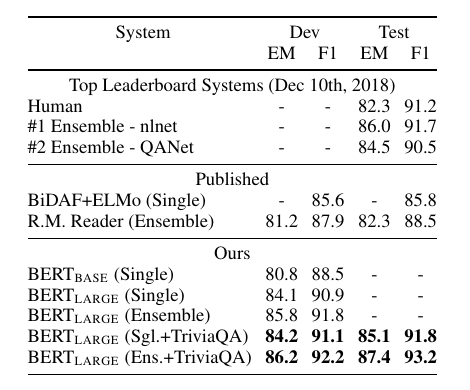
表 2： SQuAD 1.1 结果。BERT 集成模型由 7 个系统组成，它们使用不同的预训练检查点和微调随机种子。
4.3 SQuAD 2.0
SQuAD 2.0 通过允许给定段落不存在简短答案，扩展了 SQuAD 1.1 的问题定义，使任务更加现实。
我们使用一个简单方法扩展用于该任务的 SQuAD 1.1 BERT 模型。我们把没有答案的问题视为答案跨度的起点和终点都位于 [CLS] 词元。答案跨度起点和终点的位置概率空间也扩展为包含 [CLS] 词元的位置。预测时，我们把无答案跨度得分
与最佳非空跨度得分
进行比较。当 $\hat{s}_{i,j}>s_{\mathrm{null}}+\tau$ 时预测非空答案，其中阈值 $\tau$ 在开发集上选择，以最大化 F1。该模型没有使用 TriviaQA 数据。我们微调 2 个周期，学习率 $5\mathrm{e}{-5}$，批大小 48。
表 3 给出了与之前排行榜条目和已发表工作的比较（Sun 等，2018；Wang 等，2018b），并排除了将 BERT 作为组件的系统。相比之前最佳系统，我们观察到 F1 提升 5.1 个百分点。
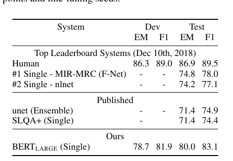
表 3： SQuAD 2.0 结果。排除了使用 BERT 作为组件的条目。
4.4 SWAG
SWAG（对抗式生成情境）数据集包含 11.3 万个句子对补全样例，用于评估有依据的常识推理（Zellers 等，2018）。给定一个句子，任务是从四个选项中选择最合理的后续内容。
在 SWAG 数据集上微调时，我们构造四个输入序列，每个序列都包含给定句子（句子 A）与一个可能的后续内容（句子 B）的拼接。唯一引入的任务专用参数是一个向量，它与 [CLS] 词元表示的点积表示每个选项的得分，再通过 softmax 层归一化。
我们微调 3 个周期，学习率 $2\mathrm{e}{-5}$，批大小 16。结果见表 4。BERTLARGE 比作者的基线 ESIM+ELMo 系统高 27.1%，比 OpenAI GPT 高 8.3%。
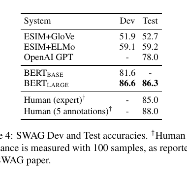
表 4： SWAG 开发集和测试集准确率。† 人类表现以 100 个样例测量，数值来自 SWAG 论文。
5. 消融研究
本节对 BERT 的多个方面进行消融实验，以更好地理解它们的相对重要性。附录 C 给出更多消融研究。
5.1 预训练任务的影响
我们使用与 BERTBASE 完全相同的预训练数据、微调方案和超参数，评估两个预训练目标，以展示 BERT 深层双向性的作用：
无下一句预测： 使用“掩码语言模型”（MLM）训练的双向模型，但不使用“下一句预测”（NSP）任务。
从左到右且无下一句预测： 使用标准从左到右（LTR）语言模型训练的仅左侧上下文模型，而不是 MLM。微调时也施加仅左侧约束，因为移除该约束会造成预训练与微调不匹配，从而降低下游性能。此外，该模型预训练时不使用 NSP 任务。它与 OpenAI GPT 直接可比，但训练数据集更大，输入表示和微调方案也不同。
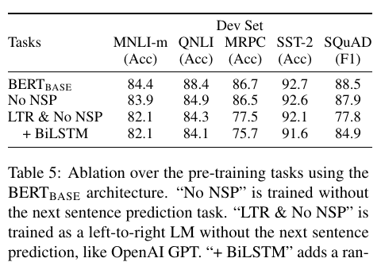
表 5： 使用 BERTBASE 架构对预训练任务进行消融。“无 NSP”是不使用下一句预测任务训练的模型。“LTR 且无 NSP”像 OpenAI GPT 一样作为从左到右语言模型训练。“+BiLSTM”表示在“LTR 且无 NSP”模型顶部加入随机初始化的双向长短期记忆网络，并在微调时训练。
首先考察 NSP 任务的影响。表 5 表明，移除 NSP 会显著损害 QNLI、MNLI 和 SQuAD 1.1 的性能。接着，通过比较“无 NSP”和“LTR 且无 NSP”，评估训练双向表示的影响。LTR 模型在所有任务上的表现都比 MLM 模型差，在 MRPC 和 SQuAD 上下降尤其明显。
对于 SQuAD，LTR 模型在词元预测上表现差是直观可见的，因为词元级隐藏状态没有右侧上下文。为了尽力增强 LTR 系统，我们在顶部加入随机初始化的双向长短期记忆网络。这显著改善了 SQuAD 结果，但总体上仍远差于预训练的双向模型。双向长短期记忆网络会损害 GLUE 任务的性能。
当然，也可以分别训练 LTR 和 RTL 模型，并像 ELMo 一样把每个词元表示为两个模型的拼接。然而：(a) 这比一个双向模型昂贵一倍；(b) 对问答等任务不直观，因为 RTL 模型无法依据问题来条件化答案；(c) 它严格弱于深层双向模型，因为后者可以在每一层同时使用左右上下文。
5.2 模型规模的影响
本节研究模型规模对微调任务准确率的影响。我们训练了一系列 BERT 模型，改变层数、隐藏单元数量和注意力头数量，同时保持此前描述的超参数和训练过程不变。
表 6 展示了所选 GLUE 任务的结果。表中报告 5 次随机重启微调得到的平均开发集准确率。可以看到，更大模型在四个数据集上都带来严格的准确率提升，即使 MRPC 只有 3,600 个有标注训练样例，而且与预训练任务差异很大。更令人惊讶的是，在相对于现有研究已经很大的模型之上，我们仍能获得显著提升。例如，Vaswani 等人（2017）探索的最大变换器为 $L=6,H=1024,A=16$，编码器含 1 亿参数；我们在文献中找到的最大变换器为 $L=64,H=512,A=2$，含 2.35 亿参数（Al-Rfou 等，2018）。相比之下，BERTBASE 含 1.1 亿参数，BERTLARGE 含 3.4 亿参数。
长期以来，人们已经知道，增大模型规模会持续改进机器翻译和语言建模等大规模任务，表 6 的留出训练数据语言模型困惑度也显示了这一点。然而，我们认为，本文首次有说服力地展示了：只要模型得到充分预训练，将规模扩展到极大程度也能在非常小规模任务上带来大幅提升。Peters 等人（2018b）报告了将预训练双向语言模型从两层增加到四层对下游任务影响的混合结果；Melamud 等人（2016）顺带提到，把隐藏维度从 200 增至 600 有帮助，但继续增至 1,000 并未带来更多提升。这两项工作都采用基于特征的方法。我们推测，当模型直接在下游任务上微调，且只使用少量随机初始化的附加参数时，即使下游任务数据非常少，任务专用模型也能从更大、更有表达力的预训练表示中受益。
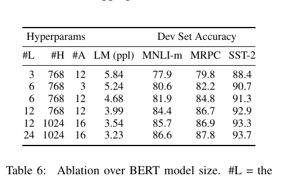
表 6： BERT 模型规模消融。#L 表示层数；#H 表示隐藏层大小；#A 表示注意力头数量。“LM（ppl）”是留出训练数据的掩码语言模型困惑度。
5.3 使用 BERT 的基于特征方法
到目前为止，BERT 的所有结果都采用微调方法：向预训练模型添加一个简单分类层，并在下游任务上联合微调所有参数。然而，基于特征的方法，即从预训练模型提取固定特征，也有一些优点。首先，并非所有任务都能方便地表示为变换器编码器架构，因此需要添加任务专用模型架构。其次，可以先计算一次训练数据的昂贵表示，然后在此表示上使用更便宜的模型运行许多实验，这会带来显著计算收益。
本节在 CoNLL-2003 命名实体识别（NER）任务上应用 BERT，比较这两种方法（Tjong Kim Sang 与 De Meulder，2003）。输入 BERT 时，使用保留大小写的 WordPiece 模型，并纳入数据提供的最大文档上下文。按照标准做法，我们把任务形式化为标注任务，但不使用 CRF 层。输出端使用第一个子词元的表示，作为词元级分类器在 NER 标签集上的输入。
为了消融微调方法，我们采用基于特征的方法：从一个或多个层提取激活值，不微调 BERT 的任何参数。这些上下文嵌入被用作随机初始化的两层、每层 768 维双向长短期记忆网络的输入，之后接分类层。
结果见表 7。BERTLARGE 与当前最佳方法具有竞争力。表现最好的方法拼接预训练变换器顶部四个隐藏层的词元表示，只比微调整个模型低 0.3 个 F1。这表明 BERT 对微调和基于特征的方法都有效。
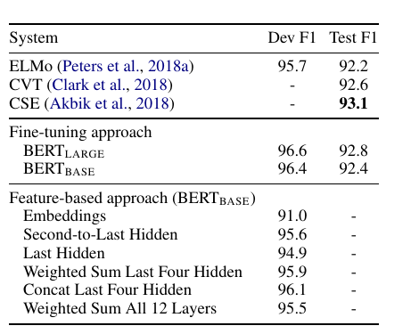
表 7： CoNLL-2003 命名实体识别结果。超参数使用开发集选择。报告的开发集和测试集得分，是在这些超参数下进行 5 次随机重启后的平均值。
6. 结论
近期语言模型迁移学习带来的经验性改进表明，丰富的无监督预训练已经成为许多语言理解系统不可或缺的组成部分。特别是，这些结果使低资源任务也能从深层单向架构中受益。我们的主要贡献是把这些发现进一步推广到深层双向架构，使同一个预训练模型能够成功处理广泛的自然语言处理任务。
原文脚注
- tensor2tensor：https://github.com/tensorflow/tensor2tensor。
- 《带注释的变换器》：http://nlp.seas.harvard.edu/2018/04/03/attention.html。
- 所有模型都把前馈层/滤波器大小设为 $4H$，即当 $H=768$ 时为 3072，当 $H=1024$ 时为 4096。
- 文献中通常把双向变换器称为“变换器编码器”，把仅使用左侧上下文的版本称为“变换器解码器”，因为后者可用于文本生成。
- 最终模型在下一句预测上的准确率达到 97%--98%。
- 未经微调时，向量 $C$ 不是有意义的句子表示，因为它通过下一句预测任务训练。
- 例如，BERT 的 SQuAD 模型在单个云 TPU 上训练约 30 分钟，即可达到开发集 F1 91.0。
- 参见 https://gluebenchmark.com/faq 中的第 10 项。
- GLUE 数据集分发包不包含测试标签，因此 BERTBASE 和 BERTLARGE 各只向 GLUE 评测服务器提交了一次。
- GLUE 排行榜：https://gluebenchmark.com/leaderboard。
- Yu 等人（2018）描述了 QANet，但该系统在论文发表后已有大幅改进。
- 本文使用的 TriviaQA 数据由 TriviaQA-Wiki 的段落组成：取文档开头 400 个词元，并要求其中至少包含一个给出的可能答案。
- 云 TPU 说明：https://cloudplatform.googleblog.com/2018/06/Cloud-TPU-now-offers-preemptible-pricing-and-global-availability.html。
- 本文只报告单任务微调结果。多任务微调可能进一步提升性能，例如作者观察到与 MNLI 进行多任务训练能显著改进 RTE。
- https://gluebenchmark.com/faq。
参考文献
- Alan Akbik、Duncan Blythe、Roland Vollgraf，2018。《用于序列标注的上下文字符串嵌入》。第 27 届国际计算语言学大会论文集，第 1638--1649 页。
- Rami Al-Rfou、Dokook Choe、Noah Constant、Mandy Guo、Llion Jones，2018。《使用更深自注意力进行字符级语言建模》。arXiv:1808.04444。
- Rie Kubota Ando、Tong Zhang，2005。《从多任务与无标注数据中学习预测结构的框架》。《机器学习研究杂志》6：1817--1853。
- Luisa Bentivogli、Bernardo Magnini、Ido Dagan、Hoa Trang Dang、Danilo Giampiccolo，2009。《第五届 PASCAL 文本蕴含识别挑战》。TAC，NIST。
- John Blitzer、Ryan McDonald、Fernando Pereira，2006。《利用结构对应学习进行领域适配》。2006 年自然语言处理经验方法会议论文集，第 120--128 页。
- Samuel R. Bowman、Gabor Angeli、Christopher Potts、Christopher D. Manning，2015。《用于学习自然语言推理的大规模标注语料库》。EMNLP。
- Peter F. Brown、Peter V. Desouza、Robert L. Mercer、Vincent J. Della Pietra、Jenifer C. Lai，1992。《自然语言的基于类别的 n 元语法模型》。《计算语言学》18(4)：467--479。
- Daniel Cer、Mona Diab、Eneko Agirre、Inigo Lopez-Gazpio、Lucia Specia，2017。《SemEval-2017 任务 1：语义文本相似度的多语言与跨语言重点评测》。第 11 届语义评测国际研讨会论文集，第 1--14 页。
- Ciprian Chelba、Tomas Mikolov、Mike Schuster、Qi Ge、Thorsten Brants、Phillipp Koehn、Tony Robinson，2013。《衡量统计语言建模进展的十亿词基准》。arXiv:1312.3005。
- Z. Chen、H. Zhang、X. Zhang、L. Zhao，2018。《Quora 问题对》。
- Christopher Clark、Matt Gardner，2018。《简单有效的多段落阅读理解》。ACL。
- Kevin Clark、Minh-Thang Luong、Christopher D. Manning、Quoc V. Le，2018。《使用交叉视图训练的半监督序列建模》。2018 年自然语言处理经验方法会议论文集，第 1914--1925 页。
- Ronan Collobert、Jason Weston，2008。《自然语言处理的统一架构：使用多任务学习的深度神经网络》。第 25 届国际机器学习会议论文集，第 160--167 页。
- Alexis Conneau、Douwe Kiela、Holger Schwenk、Loïc Barrault、Antoine Bordes，2017。《从自然语言推理数据监督学习通用句子表示》。2017 年自然语言处理经验方法会议论文集，第 670--680 页。
- Andrew M. Dai、Quoc V. Le，2015。《半监督序列学习》。神经信息处理系统进展，第 3079--3087 页。
- J. Deng、W. Dong、R. Socher、L.-J. Li、K. Li、L. Fei-Fei，2009。《ImageNet：大规模层次化图像数据库》。CVPR 2009。
- William B. Dolan、Chris Brockett，2005。《自动构建句子释义语料库》。第三届国际释义研讨会论文集。
- William Fedus、Ian Goodfellow、Andrew M. Dai，2018。《MaskGAN：通过填空实现更好的文本生成》。arXiv:1801.07736。
- Dan Hendrycks、Kevin Gimpel，2016。《使用高斯误差线性单元连接非线性与随机正则器》。CoRR abs/1606.08415。
- Felix Hill、Kyunghyun Cho、Anna Korhonen，2016。《从无标注数据学习句子的分布式表示》。2016 年北美计算语言学协会年会：人类语言技术论文集。
- Jeremy Howard、Sebastian Ruder，2018。《用于文本分类的通用语言模型微调》。ACL。
- Minghao Hu、Yuxing Peng、Zhen Huang、Xipeng Qiu、Furu Wei、Ming Zhou，2018。《强化记忆阅读器用于机器阅读理解》。IJCAI。
- Yacine Jernite、Samuel R. Bowman、David Sontag，2017。《用于快速无监督句子表示学习的基于篇章目标》。CoRR abs/1705.00557。
- Mandar Joshi、Eunsol Choi、Daniel S. Weld、Luke Zettlemoyer，2017。《TriviaQA：大规模远程监督阅读理解挑战数据集》。ACL。
- Ryan Kiros、Yukun Zhu、Ruslan R. Salakhutdinov、Richard Zemel、Raquel Urtasun、Antonio Torralba、Sanja Fidler，2015。《跳跃思维向量》。神经信息处理系统进展，第 3294--3302 页。
- Quoc Le、Tomas Mikolov，2014。《句子与文档的分布式表示》。国际机器学习会议，第 1188--1196 页。
- Hector J. Levesque、Ernest Davis、Leora Morgenstern，2011。《Winograd 模式挑战》。AAAI 春季研讨会：常识推理的逻辑形式化，第 46 卷，第 47 页。
- Lajanugen Logeswaran、Honglak Lee，2018。《学习句子表示的高效框架》。国际学习表示会议。
- Bryan McCann、James Bradbury、Caiming Xiong、Richard Socher，2017。《从翻译中学习：上下文化词向量》。神经信息处理系统进展。
- Oren Melamud、Jacob Goldberger、Ido Dagan，2016。《context2vec：使用双向长短期记忆网络学习通用上下文嵌入》。CoNLL。
- Tomas Mikolov、Ilya Sutskever、Kai Chen、Greg S. Corrado、Jeff Dean，2013。《词与短语的分布式表示及其组合性》。神经信息处理系统进展 26，第 3111--3119 页。
- Andriy Mnih、Geoffrey E. Hinton，2009。《可扩展的分层分布式语言模型》。神经信息处理系统进展 21，第 1081--1088 页。
- Ankur P. Parikh、Oscar Täckström、Dipanjan Das、Jakob Uszkoreit，2016。《用于自然语言推理的可分解注意力模型》。EMNLP。
- Jeffrey Pennington、Richard Socher、Christopher D. Manning，2014。《GloVe：用于词表示的全局向量》。自然语言处理经验方法会议论文集，第 1532--1543 页。
- Matthew Peters、Waleed Ammar、Chandra Bhagavatula、Russell Power，2017。《使用双向语言模型进行半监督序列标注》。ACL。
- Matthew Peters、Mark Neumann、Mohit Iyyer、Matt Gardner、Christopher Clark、Kenton Lee、Luke Zettlemoyer，2018a。《深层上下文化词表示》。NAACL。
- Matthew Peters、Mark Neumann、Luke Zettlemoyer、Wen-tau Yih，2018b。《剖析上下文词嵌入：架构与表示》。2018 年自然语言处理经验方法会议论文集，第 1499--1509 页。
- Alec Radford、Karthik Narasimhan、Tim Salimans、Ilya Sutskever，2018。《使用无监督学习改进语言理解》。OpenAI 技术报告。
- Pranav Rajpurkar、Jian Zhang、Konstantin Lopyrev、Percy Liang，2016。《SQuAD：用于机器文本理解的十万多个问题》。2016 年自然语言处理经验方法会议论文集，第 2383--2392 页。
- Minjoon Seo、Aniruddha Kembhavi、Ali Farhadi、Hannaneh Hajishirzi，2017。《用于机器理解的双向注意力流》。ICLR。
- Richard Socher、Alex Perelygin、Jean Wu、Jason Chuang、Christopher D. Manning、Andrew Ng、Christopher Potts，2013。《用于情感树库语义组合性的递归深度模型》。2013 年自然语言处理经验方法会议论文集，第 1631--1642 页。
- Fu Sun、Linyang Li、Xipeng Qiu、Yang Liu，2018。《U-net：带不可回答问题的机器阅读理解》。arXiv:1810.06638。
- Wilson L. Taylor，1953。《完形填空程序：一种新的可读性测量工具》。《新闻学公报》30(4)：415--433。
- Erik F. Tjong Kim Sang、Fien De Meulder，2003。《CoNLL-2003 共享任务介绍：与语言无关的命名实体识别》。CoNLL。
- Joseph Turian、Lev Ratinov、Yoshua Bengio，2010。《词表示：一种简单通用的半监督学习方法》。第 48 届计算语言学协会年会论文集，第 384--394 页。
- Ashish Vaswani、Noam Shazeer、Niki Parmar、Jakob Uszkoreit、Llion Jones、Aidan N. Gomez、Lukasz Kaiser、Illia Polosukhin，2017。《注意力就是一切》。神经信息处理系统进展，第 6000--6010 页。
- Pascal Vincent、Hugo Larochelle、Yoshua Bengio、Pierre-Antoine Manzagol，2008。《利用去噪自动编码器提取和组合鲁棒特征》。第 25 届国际机器学习会议论文集，第 1096--1103 页。
- Alex Wang、Amanpreet Singh、Julian Michael、Felix Hill、Omer Levy、Samuel Bowman，2018a。《GLUE：用于自然语言理解的多任务基准与分析平台》。2018 年 EMNLP 研讨会 BlackboxNLP：分析与解释自然语言处理神经网络论文集，第 353--355 页。
- Wei Wang、Ming Yan、Chen Wu，2018b。《用于阅读理解和问答的多粒度层次注意力融合网络》。第 56 届计算语言学协会年会论文集（第一卷：长篇论文）。
- Alex Warstadt、Amanpreet Singh、Samuel R. Bowman，2018。《神经网络可接受性判断》。arXiv:1805.12471。
- Adina Williams、Nikita Nangia、Samuel R. Bowman，2018。《通过推理理解句子的广覆盖挑战语料库》。NAACL。
- Yonghui Wu、Mike Schuster、Zhifeng Chen、Quoc V. Le、Mohammad Norouzi、Wolfgang Macherey、Maxim Krikun、Yuan Cao、Qin Gao、Klaus Macherey 等，2016。《Google 神经机器翻译系统：弥合人类与机器翻译之间的鸿沟》。arXiv:1609.08144。
- Jason Yosinski、Jeff Clune、Yoshua Bengio、Hod Lipson，2014。《深度神经网络中的特征有多可迁移？》。神经信息处理系统进展，第 3320--3328 页。
- Adams Wei Yu、David Dohan、Minh-Thang Luong、Rui Zhao、Kai Chen、Mohammad Norouzi、Quoc V. Le，2018。《QANet：结合局部卷积与全局自注意力进行阅读理解》。ICLR。
- Rowan Zellers、Yonatan Bisk、Roy Schwartz、Yejin Choi，2018。《SWAG：用于有依据常识推理的大规模对抗式数据集》。2018 年自然语言处理经验方法会议论文集。
- Yukun Zhu、Ryan Kiros、Richard Zemel、Ruslan Salakhutdinov、Raquel Urtasun、Antonio Torralba、Sanja Fidler，2015。《对齐书籍与电影：通过观看电影和阅读书籍获得故事式视觉解释》。IEEE 国际计算机视觉会议论文集，第 19--27 页。
BERT 论文附录
本文附录分为三部分：
- 附录 A：BERT 的更多实现细节；
- 附录 B：实验的更多细节；
- 附录 C：更多消融研究。
附加的 BERT 消融研究包括：
- 训练步数的影响；
- 不同掩码过程的消融。
A BERT 的更多细节
A.1 预训练任务示例
下面给出预训练任务的示例。
掩码语言模型与掩码过程
假设无标注句子为 “my dog is hairy”，随机掩码过程选择第 4 个词元（对应 “hairy”），掩码过程可以进一步表示为：
- 80% 的情况： 用 [MASK] 词元替换该词，例如 “my dog is hairy” → “my dog is [MASK]”；
- 10% 的情况： 用随机词替换该词，例如 “my dog is hairy” → “my dog is apple”；
- 10% 的情况： 保持该词不变，例如 “my dog is hairy” → “my dog is hairy”。这样做的目的是让表示偏向实际观测到的词。
这一过程的优点是，变换器编码器不知道哪些词会被要求预测，也不知道哪些词被随机替换，因此被迫为每个输入词元保留分布式上下文表示。此外，由于随机替换只发生在全部词元的 1.5%（即 15% 的 10%），它似乎不会损害模型的语言理解能力。第 C.2 节评估这一过程的影响。
与标准语言模型训练相比，掩码语言模型每个批次只对 15% 的词元做预测，这意味着模型可能需要更多预训练步才能收敛。第 C.1 节证明，MLM 的收敛速度确实略慢于从左到右模型（后者预测每个词元），但 MLM 模型带来的经验性改进远远超过额外训练成本。
下一句预测
下一句预测任务可以用以下示例说明：
输入 = [CLS] the man went to [MASK] store [SEP] he bought a gallon [MASK] milk [SEP] 标签 = IsNext
输入 = [CLS] the man [MASK] to the store [SEP] penguin [MASK] are flight ##less birds [SEP] 标签 = NotNext
A.2 预训练过程
为了生成每个训练输入序列，我们从语料库中采样两个文本片段，称它们为“句子”，尽管它们通常比单个句子长得多（也可能更短）。第一个句子接收 A 嵌入，第二个句子接收 B 嵌入。50% 的情况下，B 是紧跟在 A 后面的真实下一句；另外 50% 的情况下，B 是随机句子，用于“下一句预测”任务。采样时保证两段文本合计长度不超过 512 个词元。语言模型掩码在 WordPiece 分词之后应用，均匀掩码率为 15%，不对部分词元作特殊处理。
我们使用批大小为 256 的序列（256 个序列 × 512 个词元 = 每批 128,000 个词元），训练 1,000,000 步，大约相当于在包含 33 亿词的语料库上训练 40 个周期。我们使用 Adam，学习率为 $1\mathrm{e}{-4}$，$\beta_1=0.9$，$\beta_2=0.999$，L2 权重衰减为 0.01；前 10,000 步进行学习率预热，随后线性衰减学习率。所有层使用 0.1 的 dropout 概率。按照 OpenAI GPT 的做法，我们使用 gelu 激活函数（Hendrycks 与 Gimpel，2016），而不是标准 relu。训练损失是平均掩码语言模型似然与平均下一句预测似然之和。
BERTBASE 在 4 个云 TPU 的 Pod 配置上训练（总计 16 个 TPU 芯片）。BERTLARGE 在 16 个云 TPU 上训练（总计 64 个 TPU 芯片）。每次预训练耗时 4 天。
较长序列的计算成本不成比例地高，因为注意力对序列长度呈二次方增长。为了加速实验中的预训练，我们在 90% 的步数中使用序列长度 128 进行预训练，然后在剩余 10% 的步数中使用长度 512，以学习位置嵌入。
A.3 微调过程
微调时，大多数模型超参数与预训练相同，例外是批大小、学习率和训练周期数。dropout 概率始终保持为 0.1。最佳超参数取决于具体任务，但我们发现以下范围适用于所有任务：
- 批大小： 16、32；
- 学习率（Adam）： $5\mathrm{e}{-5}$、$3\mathrm{e}{-5}$、$2\mathrm{e}{-5}$；
- 训练周期数： 2、3、4。
我们还观察到，大数据集（例如拥有 10 万个以上有标注训练样例）对超参数选择远不如小数据集敏感。微调通常很快，因此可以直接对上述参数做穷举搜索，并选择开发集上表现最好的模型。
A.4 BERT、ELMo 与 OpenAI GPT 的比较
这里研究包括 ELMo、OpenAI GPT 和 BERT 在内的近期流行表示学习模型之间的差异。图 3 直观展示了模型架构的比较。除架构差异外，BERT 和 OpenAI GPT 是微调方法，而 ELMo 是基于特征的方法。
与 BERT 最可比的现有预训练方法是 OpenAI GPT，它在大规模文本语料上训练从左到右的变换器语言模型。事实上，BERT 的许多设计决策都特意使其尽可能接近 GPT，以便最小化比较差异。本文的核心论点是，双向性和第 3.1 节介绍的两个预训练任务解释了大部分经验性改进，但 BERT 与 GPT 的训练方式还存在一些差异：
- GPT 使用 BooksCorpus（8 亿词）训练；BERT 使用 BooksCorpus（8 亿词）和维基百科（25 亿词）训练。
- GPT 的句子分隔符 [SEP] 和分类词元 [CLS] 只在微调时引入；BERT 在预训练期间就学习 [SEP]、[CLS] 以及句子 A/B 嵌入。
- GPT 以批大小 32,000 个词训练 100 万步；BERT 以批大小 128,000 个词训练 100 万步。
- GPT 的所有微调实验使用同一学习率 $5\mathrm{e}{-5}$；BERT 则选择在开发集上效果最好的任务专用微调学习率。
为了隔离这些差异的影响，我们在第 5.1 节进行消融实验。实验表明，大多数改进确实来自两个预训练任务及其带来的双向性。
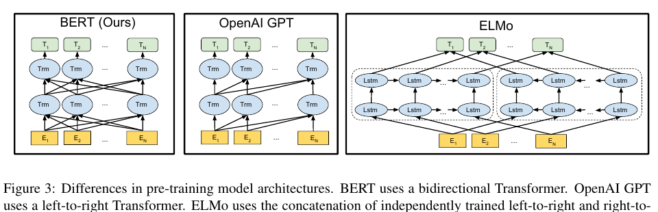
图 3： 预训练模型架构的差异。BERT 使用双向变换器；OpenAI GPT 使用从左到右的变换器；ELMo 使用独立训练的从左到右与从右到左长短期记忆网络的拼接，为下游任务生成特征。三者中只有 BERT 的表示在所有层都联合依据左右上下文。除架构差异外，BERT 和 OpenAI GPT 是微调方法，而 ELMo 是基于特征的方法。
A.5 不同任务上的微调示意
图 4 展示了 BERT 在不同任务上的微调。我们的任务专用模型由 BERT 加一个额外输出层构成，因此只需从零开始学习极少参数。图中 (a) 和 (b) 是序列级任务，(c) 和 (d) 是词元级任务。这里 $E$ 表示输入嵌入，$T_i$ 表示词元 $i$ 的上下文表示，[CLS] 是分类输出的特殊符号，[SEP] 是分隔不连续词元序列的特殊符号。
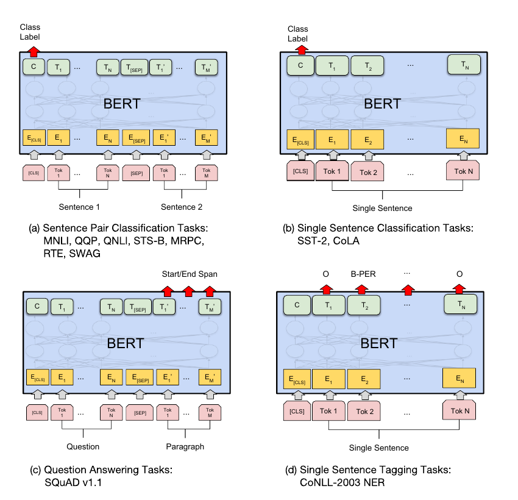
图 4： BERT 在不同任务上的微调示意。(a) 句子对分类任务：MNLI、QQP、QNLI、STS-B、MRPC、RTE、SWAG；(b) 单句分类任务：SST-2、CoLA；(c) 问答任务：SQuAD 1.1；(d) 单句标注任务：CoNLL-2003 NER。
B 详细实验设置
B.1 GLUE 基准实验的详细说明
表 1 的 GLUE 结果来自 https://gluebenchmark.com/leaderboard 和 https://blog.openai.com/language-unsupervised。GLUE 基准包含下列数据集，原始说明由 Wang 等人（2018a）汇总：
MNLI。 多体裁自然语言推理，是一个大规模众包蕴含分类任务（Williams 等，2018）。给定句子对，目标是预测第二句相对于第一句是蕴含、矛盾还是中立。
QQP。 Quora 问题对，是一个二元分类任务，目标是判断 Quora 上提出的两个问题在语义上是否等价（Chen 等，2018）。
QNLI。 问题自然语言推理，是由斯坦福问答数据集（Rajpurkar 等，2016）转换得到的二元分类任务（Wang 等，2018a）。正例是包含正确答案的问题--句子对；负例是来自同一段落、但不包含答案的问题--句子对。
SST-2。 斯坦福情感树库，是一个二元单句分类任务，句子取自电影评论，并带有人类情感标注（Socher 等，2013）。
CoLA。 语言可接受性语料库，是一个二元单句分类任务，目标是预测英语句子在语言学上是否“可接受”（Warstadt 等，2018）。
STS-B。 语义文本相似度基准，是一组取自新闻标题和其他来源的句子对（Cer 等，2017）。数据以 1 到 5 的分数标注两个句子在语义意义上的相似程度。
MRPC。 微软研究院释义语料库，由在线新闻来源自动抽取句子对，并由人工标注两个句子是否语义等价（Dolan 与 Brockett，2005）。
RTE。 文本蕴含识别，是与 MNLI 类似的二元蕴含任务，但训练数据少得多（Bentivogli 等，2009）。
WNLI。 Winograd 自然语言推理，是一个小型自然语言推理数据集（Levesque 等，2011）。GLUE 网页指出该数据集构造存在问题，而且提交到 GLUE 的每个训练系统都低于预测多数类别的 65.1 基线准确率。因此，为了公平比较 OpenAI GPT，我们排除该数据集；提交 GLUE 时始终预测多数类别。
C 额外消融研究
C.1 训练步数的影响
图 5 展示了从预训练了 $k$ 步的检查点开始微调后，MNLI 开发集的准确率。这使我们能够回答以下问题：
- 问题： BERT 是否确实需要如此大量的预训练（每批 128,000 个词 × 1,000,000 步）才能达到较高微调准确率？
回答： 是。BERTBASE 在训练 100 万步时，相比训练 50 万步，在 MNLI 上几乎多获得 1.0% 的准确率。 2. 问题： 由于每个批次只预测 15% 的词，而不是每个词，MLM 预训练是否比 LTR 预训练收敛更慢？
回答： MLM 模型确实比 LTR 模型略慢收敛。然而，从绝对准确率看，MLM 模型几乎立即开始超过 LTR 模型。
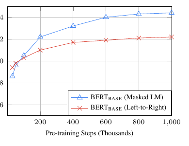
图 5： 训练步数消融。图中展示从预训练了 $k$ 步的模型参数开始微调后得到的 MNLI 准确率，横轴是 $k$ 的取值。
C.2 不同掩码过程的消融
第 3.1 节提到，BERT 在使用掩码语言模型（MLM）目标预训练时，对目标词元采用混合掩码策略。下面的消融研究评估不同掩码策略的影响。
掩码策略的目的，是减少预训练与微调之间的不匹配，因为微调阶段不会出现 [MASK] 符号。我们报告 MNLI 和 NER 的开发集结果。对于 NER，同时报告微调方法和基于特征的方法，因为我们预计基于特征的方法不允许模型调整表示，不匹配会被放大。
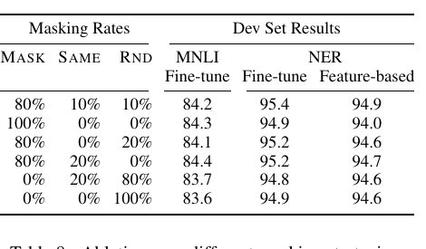
表 8： 不同掩码策略消融。表中，MASK 表示在 MLM 中用 [MASK] 符号替换目标词元；SAME 表示保持目标词元不变；RND 表示用另一个随机词元替换目标词元。
表左侧数字表示 MLM 预训练时采用各策略的概率（BERT 使用 80%、10%、10%）。右侧表示开发集结果。对于基于特征的方法，我们拼接 BERT 最后四层作为特征，这在第 5.3 节中被证明是最佳方法。
从表中可以看出，微调对不同掩码策略具有出人意料的鲁棒性。然而，正如预期的那样，在 NER 上使用基于特征的方法时，只使用 MASK 策略会产生问题。有趣的是，只使用 RND 策略的表现也远差于我们的混合策略。